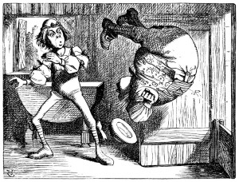
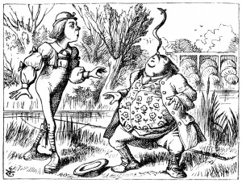

But, now that I'm perfectly sure I have none, Why, I do it again and again.'
'You are old,' said the youth, 'as I mentioned before, And have grown most uncommonly fat; Yet you turned a back-somersault in at the door-- Pray, what is the reason of that?'
'In my youth,' said the sage, as he shook his grey locks, 'I kept all my limbs very supple By the use of this ointment--one shilling the box-- Allow me to sell you a couple?'
'You are old,' said the youth, 'and your jaws are too weak For anything tougher than suet; Yet you finished the goose, with the bones and the beak-- Pray how did you manage to do it?'
'In my youth,' said his father, 'I took to the law, And argued each case with my wife; And the muscular strength, which it gave to my jaw, Has lasted the rest of my life.'
You are old,' said the youth, 'one would hardly suppose That your eye was as steady as ever; Yet you balanced an eel on the end of your nose-- What made you so awfully clever?'
'I have answered three questions, and that is enough,' Said his father; 'don't give yourself airs! Do you think I can listen all day to such stuff? Be off, or I'll kick you down stairs!'